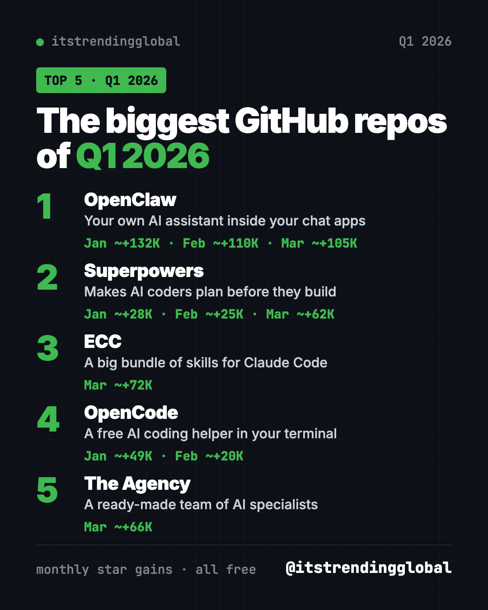
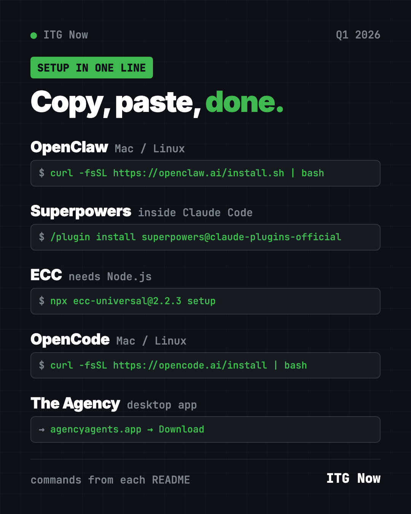
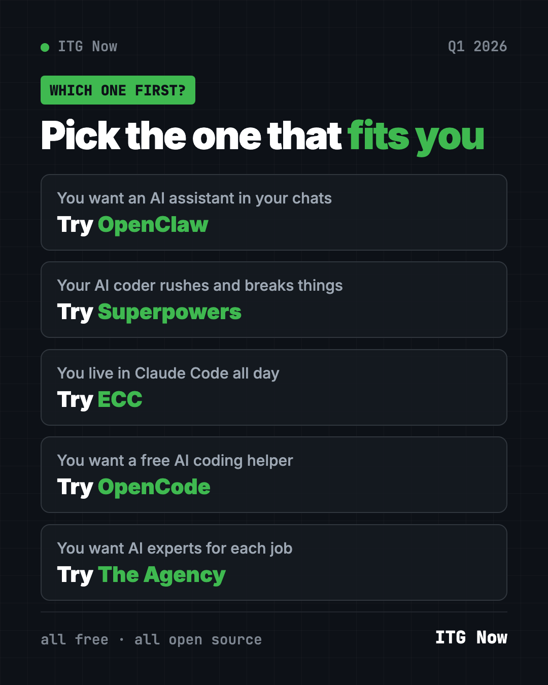

Best GitHub Repos of Q1 2026: The 5 Biggest AI Tools
- Published 15 Oct 2026
- Updated 16 Oct 2026
- 9 min read
- By the ITG Now team
In this guide (9)
The best GitHub repos Q1 2026 produced were OpenClaw, Superpowers, ECC, OpenCode and The Agency. From January to March, one story ran through all five: AI moved from a chat box to a helper that does real work on your own computer.
A GitHub star is like a bookmark or a "like." This list pulls together our three monthly top 5 lists. OpenClaw and Superpowers made the top five in all three months. OpenCode made it twice. ECC and The Agency each had one huge month in March. For each repo you get what it does, who it suits, the real setup command, and a prompt for an AI helper.
Key takeaways
- OpenClaw was the biggest repo of Q1 2026 by far. It led every month, with about 132,000, 110,000 and 105,000 new stars.
- Superpowers showed up every month and grew fastest in March. It makes AI coders plan before they build.
- ECC is a big add-on pack for Claude Code. It gained about 72,000 stars in March alone.
- OpenCode is a free, open-source AI coding helper that lives in your terminal.
- The Agency is a free team of AI specialists, each with a job role.

The 5 biggest GitHub repos of Q1 2026 at a glance
| Repo | What it does | Months in the top 5 | Free? | Works with |
|---|---|---|---|---|
| OpenClaw | AI assistant inside your chat apps | Jan, Feb, Mar | Yes (MIT), AI model may cost | Mac, Windows, Linux, phone apps |
| Superpowers | Plan-first routine for AI coders | Jan, Feb, Mar | Yes (MIT) | Claude Code, Codex and more |
| ECC | Skills, agents and rules for AI coders | Mar | Yes (MIT) | Claude Code, Codex, Cursor, OpenCode |
| OpenCode | AI coding helper in the terminal | Jan, Feb | Yes (MIT), AI model may cost | Mac, Windows, Linux |
| The Agency | Ready-made AI specialists | Mar | Yes (MIT) | Claude Code, Cursor, Codex, Gemini CLI and more |
Star gains below are the rough monthly numbers from our lists. Total star counts were checked on GitHub on October 16, 2026.
💡 Tip: The "terminal" is a plain text window for typing commands. Mac: open Terminal. Windows: open PowerShell. Paste a line, press Enter, wait.
1. OpenClaw: the repo of the quarter
Stars: about +132K in January, +110K in February, +105K in March · about 392K total
What it is: OpenClaw is a free, open-source AI assistant that runs on your own computer. You chat with it in apps you already use, like WhatsApp, Telegram, Slack, Discord, iMessage and Teams. It can take actions for you, not just reply. Your memory and passwords stay on your own device. It is run by a nonprofit foundation and has no paid tier of its own.
Who it's for: Anyone who wants one AI helper across all their chats. Small teams who want to share one.
How you'd use it:
- Text it from your phone to find a file at home and summarize it.
- Have it draft replies in Slack that you approve.
- Swap the AI model behind it, from Claude to a local model, without starting over.
Install it: On Mac or Linux, copy and paste this:
curl -fsSL https://openclaw.ai/install.sh | bash
On Windows, paste this into PowerShell:
iwr -useb https://openclaw.ai/install.ps1 | iex
A setup wizard opens. When it finishes, run openclaw dashboard and send a test message.
Or let Claude or Codex do it: Claude Code and OpenAI Codex are AI helpers that can run setup steps for you. Paste this into one:
Install OpenClaw from https://github.com/openclaw/openclaw with the official
installer from its README. Explain each setup question in plain words,
then help me connect one chat app and send a test message.
⚠️ Heads up: OpenClaw is free, but the AI model you connect may charge for use. Your messages go to that model provider.
See OpenClaw on GitHub · Read our full OpenClaw guide
2. Superpowers: the steady climber
Stars: about +28K in January, +25K in February, +62K in March · about 300K total
What it is: Superpowers is a free skill pack and work method for AI coding helpers. It stops the AI from jumping into code. First it asks what you want. Then it shows a short design you can read. Then it writes a plan and builds it in small, tested steps, checking its own work. The README says it can often work on its own for a couple of hours without drifting from the plan.
Who it's for: Anyone whose AI coder rushes, guesses, or breaks things.
How you'd use it:
- Turn a fuzzy idea into a clear, written plan before any code.
- Let it build a small project while you do something else.
- Use it in several helpers: Claude Code, Codex, Cursor, Gemini CLI, OpenCode and more.
Install it: Inside Claude Code, copy and paste this:
/plugin install superpowers@claude-plugins-official
In the Codex app, open Plugins in the sidebar and add Superpowers from the Coding section.
Or let Claude or Codex do it:
Install Superpowers from https://github.com/obra/superpowers for my AI coding
tool following its README. Then plan a simple photo gallery page with me,
asking questions first, and show me the plan before any code.
See Superpowers on GitHub · Read our full Superpowers guide

3. ECC: the power-user pack for Claude Code
Stars: about +72K in March · about 280K total
What it is: ECC, first called "everything-claude-code," is a free bundle of skills, agents, commands and rules for AI coding helpers. It gives the AI a routine: plan, test, build, review, check, remember and improve. It works best with Claude Code today. It also supports Codex and Qoder, with lighter versions for Cursor, OpenCode, Gemini and others.
Who it's for: People who use Claude Code every day and want it more careful and consistent.
How you'd use it:
- Have it write tests before it changes your app.
- Ask it to review its own work from a fresh start.
- Let it save lessons from good sessions as new skills.
Install it: You need Node.js 18 or newer, Git, and Claude Code 2.1 or newer. Copy and paste this:
npx ecc-universal@2.2.3 setup
⚠️ Heads up: The README says to install ECC only from its official GitHub page, its npm packages, or ecc.tools. It also warns not to stack more than one install method.
Or let Claude or Codex do it:
Install ECC from https://github.com/affaan-m/ECC using its guided setup.
Check my Node.js, Git and Claude Code versions first. Choose the standard
personal setup and show me how to confirm it is on.
See ECC on GitHub · Read our full ECC guide
4. OpenCode: the open AI coding helper
Stars: about +49K in January, +20K in February · about 214K total
What it is: OpenCode is a free, open-source coding agent. It runs in your terminal, and a desktop app is in beta. It has two built-in modes. "Build" can edit files. "Plan" only reads and suggests, and asks before running commands. Press Tab to switch between them.
Who it's for: Builders and students who want an AI coding helper that is open and works with many models.
How you'd use it:
- Ask it to explain a project you downloaded.
- Use Plan mode to see a to-do list before any changes.
- Have it write a small script to tidy your files.
Install it: On Mac or Linux, copy and paste this:
curl -fsSL https://opencode.ai/install | bash
On Windows, the README lists scoop install opencode or choco install opencode. The desktop app is at opencode.ai/download.
Or let Claude or Codex do it:
Install OpenCode from https://github.com/anomalyco/opencode using the method
its README suggests for my computer. Help me connect a model, then try
Plan mode on one of my folders.
5. The Agency: a team of AI specialists
Stars: about +66K in March · about 160K total
What it is: The Agency is a free collection of AI agents, each with one job and its own personality. The README says it grew out of a Reddit thread. Divisions cover engineering, design, marketing, sales, product, testing, finance and more. You load an agent into your AI helper, and it takes on that role.
Who it's for: Solo founders and small teams who need many skills but have few people.
How you'd use it:
- Ask the Instagram Curator to plan a month of posts.
- Have the Frontend Developer build a page, then the Reality Checker review it.
- Use the Content Creator to turn one article into social posts.
Install it: The easiest way is the free desktop app for Mac, Windows and Linux, from the Agency Agents releases page. It installs agents into Claude Code, Cursor, Codex, Gemini CLI, OpenCode and more with a click. On a Mac with Homebrew, copy and paste this:
brew install --cask msitarzewski/agency-agents/agency-agents
Or let Claude or Codex do it:
Install the marketing agents from https://github.com/msitarzewski/agency-agents
into my AI coding tool, following its README. Then activate the Content
Creator and help me plan one week of posts.
Which one should you try first?
- You want one AI helper in your chats: start with OpenClaw.
- Your AI coder rushes: add Superpowers.
- You live in Claude Code: go further with ECC.
- You want a free coding helper: try OpenCode.
- You need experts for many jobs: grab The Agency.

Want the month-by-month detail? Read our lists for January, February and March 2026. Then see what came next in the 5 biggest GitHub repos of Q2 2026.
FAQ
What were the best GitHub repos of Q1 2026?
The best GitHub repos Q1 2026 brought were OpenClaw, Superpowers, ECC, OpenCode and The Agency. OpenClaw led all three months of the quarter.
How did you rank the Q1 2026 repos?
We added up the monthly star gains from our January, February and March top 5 lists. That is why Superpowers, with three good months, ranks above ECC's one huge month.
Are these GitHub repos free?
Yes, all five are free and MIT-licensed. The AI models they connect to may charge for use.
Which Q1 2026 repo is best for beginners?
OpenClaw, because its installer opens a wizard that guides you. The Agency is also easy, since its desktop app installs agents with a click.
What do Superpowers and ECC have in common?
Both make AI coding helpers plan, test and check their work. Superpowers is one focused routine. ECC is a much larger bundle.
Keep reading

Trending GitHub Repos October 2026: The Top 5 So Far
The trending GitHub repos of October 2026 so far: a free Photoshop-style editor, an AI art studio, a big AI model for gaming PCs and more, explained.

Trending GitHub Repos This Week, Oct 5 2026: The Top 5
Trending GitHub repos this week Oct 5 2026: Matt Pocock's skills, the openGym workout tracker, e2e testing, HyperFrames video and claude-mem memory.

GitHub Trending September 28, 2026: Hindsight and Paperclip
GitHub trending September 28 2026: Hindsight, Paperclip, NVIDIA's OpenShell and a free 542-lesson AI course, with setup steps for each.